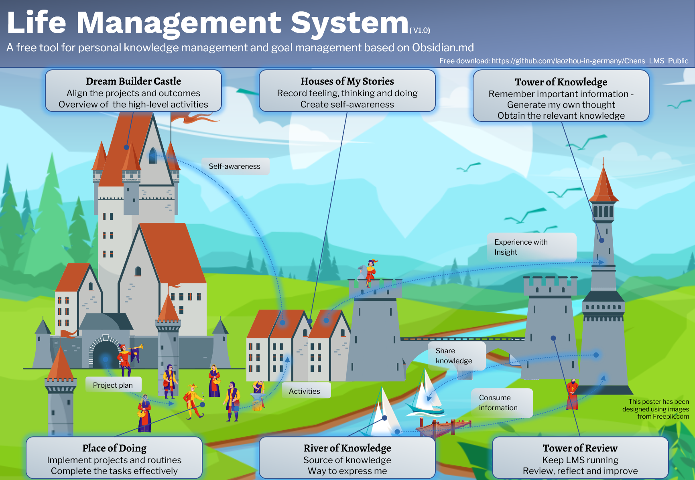

LMS as a medieval town

The LMS is a complex interactive system. If we compare the LMS with a medieval town. This town has 6 main districts:
- Dream Builder Castle (Goal Management)
- Houses of My Stories (Journal)
- Tower of Knowledge (Knowledge Management)
- Tower of Review (Periodic Review)
- Place of Doing (Project Implementation)
- River of Knowledge (Outside Would)
The dream builder castle is the command center for strategy. The vision and dream are broken down into actionable project plans. The guiding question here is: what kind of person do I want to be? Finding the dream and choosing the right things are maybe the most important thing in life.
In the place of doing the projects from the dream builder castle are implemented. It's not easy to keep our commitment. Sometimes we don't have sufficient time, sometimes we don't have the willpower to do some boring tasks, and sometimes we just lost our priority due to a large number of tasks. Find the right productivity method for yourself and complete the tasks effectively.
One of the most difficult things in life is maybe to know yourself. Writing a journal helps you to know yourself. In the houses of my stories the feeling, thinking and doing are recorded. The guiding question here is: What kind of person am I? The improved self-awareness helps you to find your life purpose. And combing own experience with theoretical knowledge creates wisdom.
The river of knowledge is the way to communicate with the outside world. We consume information from the outside world. Creating a good habit to consume information in the epoch of information overload is a key competence. We are not only consumers using the river of knowledge, but also players in the river of knowledge. We use it to exchange our experiences and opinions with others and also share our knowledge.
The tower of knowledge is a place, where we consume the external information effectively and also create our thought. Here don't forget to ask about the purpose of consuming the information: What kind of knowledge (information) do I need?
It's quite complicated to make each part work correctly and keep them interactive with each other smoothly. It's important, that we step back from time to time and review each part and the complete system. In the tower of review, we review them periodically and keep the system running.
You can download the poster with the complete workflow of each part. LMS_poster_portrait
{kind=link}